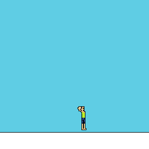
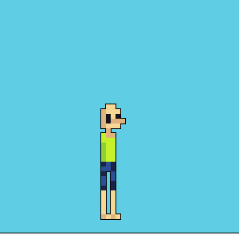
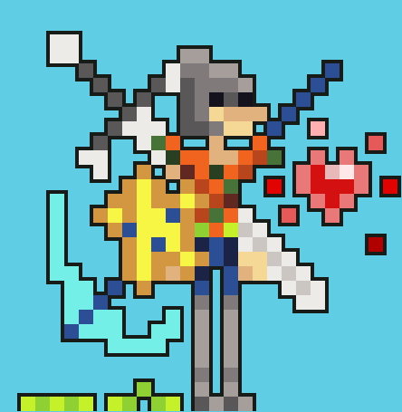
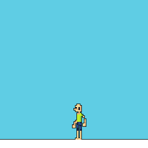
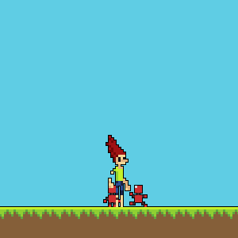

// THE GODOT ARC;
November 11, 2026. 2:11 PM
In the last few weeks I made a pretty solid attempt at building my new design for BASEWORLD in Godot, and I learned a lot by doing it! For context, I have been using GameMaker for 15 years, and since I am restarting my game, I decided to use this as an opportunity to try out Godot. The TL;DR is that it's pretty cool! But I still really like GameMaker...
The first thing I did was re-create my messed up render pipeline that I use in GameMaker. The idea is simple, I render the game onto a surface that is 4x as small as the final render surface, scale it up to match the final render surface (4x), and then apply an outline to the contents of that surface. The result is an outline over my pixel art comprised of pixels that are exactly 1/4th the size of everything else in the game without disrespecting the intended pixel-grid size. This was a total PAIN in Godot, but I ended up getting it done without really understanding how it worked ( and leaning on my good friend Zandy's shoulder ), and I guess that's just what happens when you are given really powerful tools like Nodes that just do a ton of stuff out of the box - you only have to mess with some levers until you get what you want...
I got to experiment with the Skeletal Animation system, which is not really something that GameMaker supports. It's really cool!



The thing I like about Nodes in Godot is they make it SUPER easy to overlap different sprites - like for clothing purposes! Sprite2D nodes automatically inherit the position and rotation of the parent node, which works real well with the equipment-layering system that I have in mind for BASEWORLD.
For example, this is a mockup of how much stuff the player might have drawn on-top of them... It's a lot!

Here are some finished Skeletal Animations. I really like how weird and smooth they are, and I also really like how EASY it is to create new animations and swap between them. And I ALSOALSO really like how all the clothing I put on my character will simply be in the right spot! What I DON'T like, surprisingly, is how few opportunities you get to be creative when the tool you're using just works. It makes me feel quite lazy - like I would be fine with a result that doesn't actually validate my vision - and I don't like that! Possible skill issue there... but it is something to consider since I am more worried about having a creative process that learns me a'lotta stuff over one that just "gets the game done."


Once it became time to architect the greater game structures, I've got to say, I really did not enjoy battling my Godot ignorance to get things to work the way I wanted them to. GDScript is a MUCH more protected language than GML, and I understand why you would want to create a well-protected programming language when making a tool that a large number of programmers will be using, but I also really prefer a lot of stuff that GML lets me get away with. So, just personal preference, GML > GDScript... and I really really miss just having a bunch of Global-Space data structures and scripts that I can just spam Game-State functionality into. It just feels so good man. I know there are Godot alternatives that I can learn how to use, but it's like eating vegetables, man...
So here's where I'm at now... Everything that I've learned about Godot so far has just informed me about what I would prefer to do in GameMaker, and everything I haven't learned about Godot so far has just showed me how useful my knowledge of GameMaker is to me, so now I am wanting to start ANOTHER sister project in GameMaker that challenges my understanding of how much I prefer Godot. I want to get a really precise understanding of what I like about each tool!
Learnin' a lot out here. Please send help.
OVER AND OUT